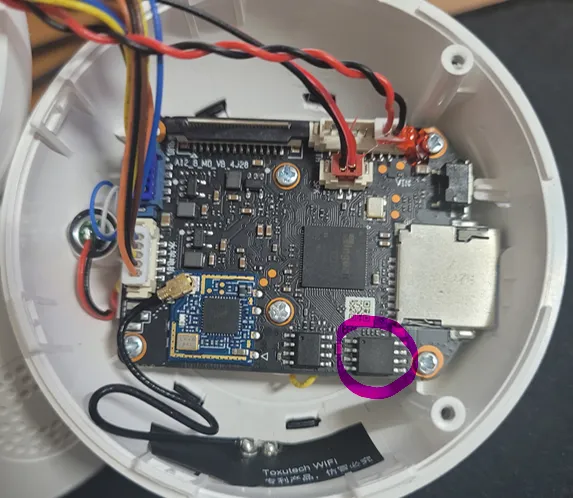

📌 About Me
🔎 Club
2025.06 ~ 2025.08 | Movisec (네트워크보안동아리)
- Wireshark를 활용한 네트워크 패킷 분석 수행
- DDoS 공격 상황에서 이상 트래픽 패턴 식별
- 재전송 공격 환경에서 패킷 흐름 및 통신 흐름 분석
2024.03 ~ 2025.02 | PEPSI (부채널 분석 동아리)
- AES·ARIA 암호 알고리즘 대상 부채널 공격 실습 및 경진대회 문제 풀이 수행
- ChipWhisperer 기반 전력 파형 분석과 DPA/CPA 공격을 C언어로 구현하여 비밀 키 복구 성공
2023.09 ~ 2024.12 | CO2 (최적화 동아리)
- LEA, AES, SHA 등 암호 알고리즘 구현
- 연산 구조 및 메모리 접근 기반 최적화 수행
---
💻 Work Experience
2024.06 ~ 2024.08 | NSHC (현장실습 인턴)
- 1. 부서 : LLVM 연구소
- 2. 업무 내용 : SMT solver 기반 코드 동등성 검증 수행
- 컴파일러 난독화 전후 프로그램 동작 동일성 확인
---
🧾 Certificate
- 2024.02 TOEIC 825
- 2025.02 OPIC IH
- 2026.03 SQLD
Projects
Big Integer Library

큰 정수 연산 라이브러리를 구현하고 Karatsuba 알고리즘을 적용하여 성능을 개선한 프로젝트
- 팀 프로젝트 (3명, 팀장)
- 곱셈/나눗셈/거듭제곱 구현
- Karatsuba 적용 및 성능 측정
🔗 GitHub
Firmware Analysis


임베디드 홈캠 펌웨어를 분석하고 시스템 구조와 실행 흐름을 파악한 프로젝트
- 8명 팀 프로젝트
- binwalk 기반 파일 시스템 분석
- QEMU 환경에서 부팅 성공
🔗GitHub
Laser Communication
라즈베리파이 기반 광통신 시스템을 구현하고
커스텀 통신 프로토콜을 설계한 프로젝트
🔍 상세 보기
요약
역할
성과
시기
Code
GitHub
Used
`C` `Raspberry Pi` `Linux` `pigpio`
세부 내용
- STX/ETX 기반 패킷 설계
- Checksum 오류 검출
- ACK/NACK 재전송